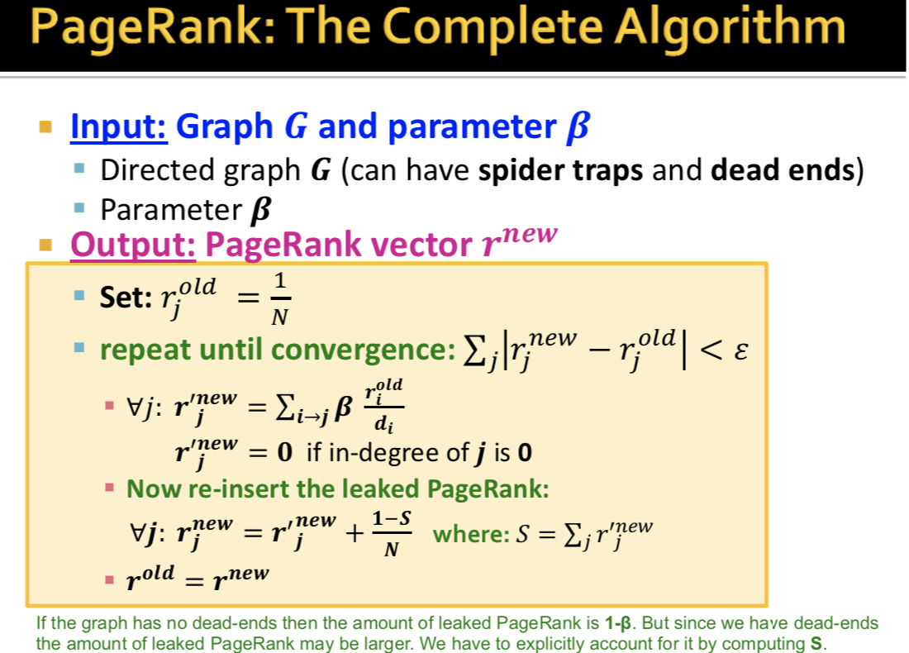
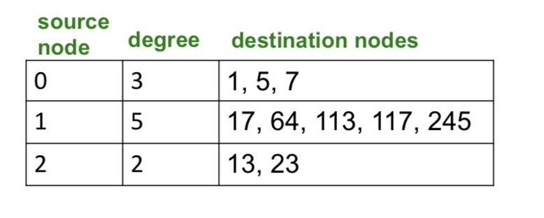
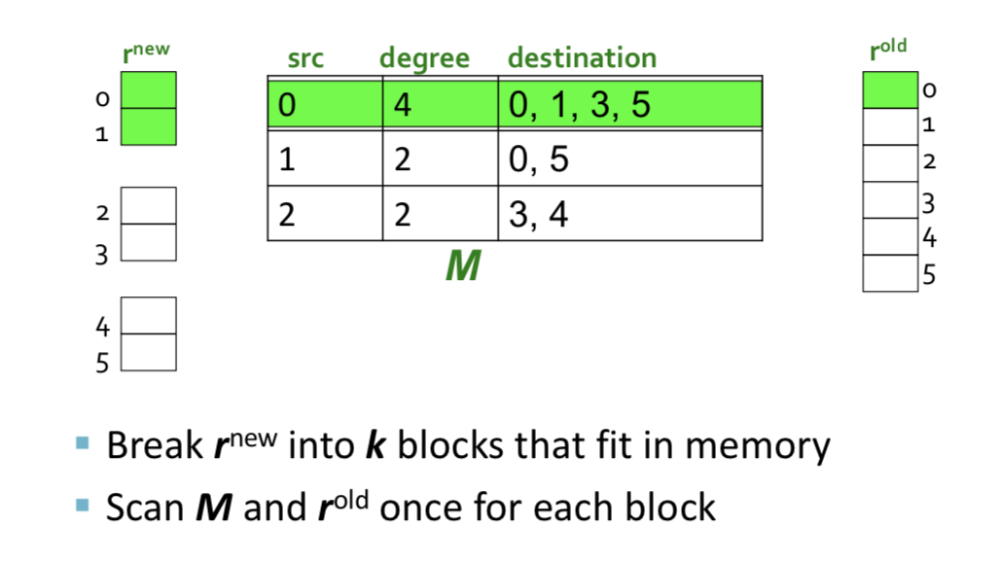
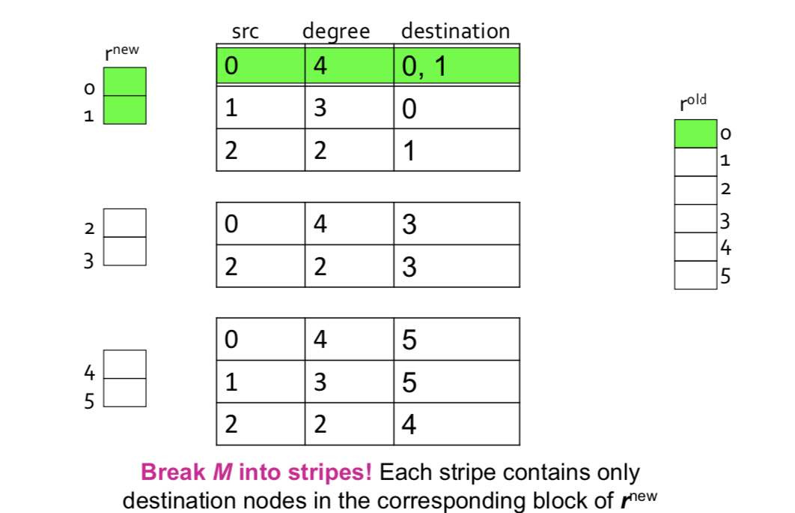

Lecture 9- Analysis of Large Graphs: Link Analysis, PageRank
- Informational Retrieval investigates: Find relevant docs in a small and trusted set.
- Link Analysis (how to rank importances in a graph - PageRank)
Pagerank: The "Flow" Formulation
- Page is more important if it has more links, links from more important pages count more (recursive definition!)
- Models a random surfer who clicks web links randomly.
- PageRank is probability distribution of where the surfer might be after a long time of surfing.
- Technically: the PageRank score = the principal eigenvector of the Web's transition matrix.
Every link's vote is proportional to the importance of its source page. So if page j has importance rj and n out-links, each links gets rj/n votes.
Pagerank: The Matrix Formulation
- Define the stochastic adjacency matrix M. (1)
- Let page i have di out-links:
- If i -> j, then Mji=1di else Mji=0
- Define the rank vector r: vector with an entry per page, such that ri is the importance score of page i, and ∑iri=1.
- The flow equations can be written rj=∑i−>jridi, that is,
r=M⋅r
(2)
Thus the rank vector r is an eigenvector of M. In fact, it is the value obtained applying M many many times (a power iteration), which is the principal eigenvector, which is the PageRank. We can obtain the PageRank through the power iteration algorithm.
PageRank Algorithm: Power Iteration
- Suppose N web pages.
- Initalize rank vector r(0)=[1/N,...,1/N]T
- Iterate: r(t+1)=M⋅r(t)
- Stop when |r(t+1)−t(t)|1<ϵ
Typically converges in ~50 iterations, even on a graph with billions of nodes.
With some modifications, Unique Convergence is by theory of Markov Procesess (Random walks) (3)
Two modifications to amek it converge, and to make it converge to what we want:
2 problems:
- Dead ends (pages with no out-links - causes importance values to 'leak out')
- Spider Traps (all out-links are within the group). Random walk gets 'stuck' in a trap and eventually spider traps absorb all importance.
We solve these two problems with random teleports; With prob b, always follow a link at random, with prob 1−b, jump to some random page. If you hit a dead-end, teleport with probabilty 1. b 0.8.
Actually computing PageRank
We need to do Power Iteration to compute PageRank: rnew=Arold.
However, we usually don't have enough main memory to hold A, rold, rnew. (4)
We rearrange the equation to the sparse matrix formulation:
Since M is a sparse matrix (with no dead-ends). Approx O(N) entries, not O(N2).
So in each iteration in PageRank, we need to:
- Compute rnew=βMrold
- And add a constant value (1−β)/N to each entry in rnew.
- Note that if M contains dead-ends then ∑jrnewj<1 and we have to renormalize rnew so that it sums to 1.
Basic Unoptimized PageRank Algorithm
Assumes the graph (O(l*N) memory, where l is average number of links per page) fits into memory.

Optimized PageRank Algo (Used in Regular Google Jobs)
Optimization 1: list of pages O(N) barely fits in memory
Assume enough memory to fit just rnew in memory.
Basic Memory Saving PageRank
- Space proportional roughtly to number of links.
- Say 10M, or 4101 billion = 40GB.
- Still won't fit in memory but will fit in disk.
Maintain the following table: source node, degree (so far), destination nodes (so far).

Assume enough memory to fit just rnew in memory.
Store rold and matrix M on disk.
Assumes enough memory to fit rnew into memory, cost per iteration of power method = 2|r|+|M|.
What if r^{new} does not fit into memory?
Block based algorithm (breaking up rnew which does not fit in memory)

Trades off using less memory for more disk reads.
Total cost: k scans of M and rold once for each block.
- k scans of M and $r^{old}
- Cost per iteration of power iteration: k|M|+(k+1)|r|.
Note that M is much bigger than r (approx 10-20x), so we try to avoid reading it k times per iteration.
Block-Stripe Update Algorithm (Optimization using partitioning)

Break M into partitions/stripes such that each partition contains only destination nodes in the corresponding block of rnew
Cost per iteration of Power Method: (1+overhead)|M|+(k+1)|r|
Problems with PageRank:
- Measures generic popularity of a page. Biased against topic-specific authorities.
- Solution: Topic-Specific-PageRank. Make the random walker landing probabilty not uniform
- Uses a single measure of importnace:
- Solution: Other models of importance, eg. Hubs and Authorities
- Suceptible to link spam attacks
Notes
(1) Every column sums to 1. M is essentially the adjacency matrix with each column divided by the out-degree.
(2) In steady state
(3) For graphs that satisfy certian conditions, the stationary distribution is uniqye and will eventually be reached no matter what the inital proabilty distribution is.
(4) If N = 1 billion pages, we need 4 bytes for each entry, Matrix A has N^2 entries = 10^18 !!